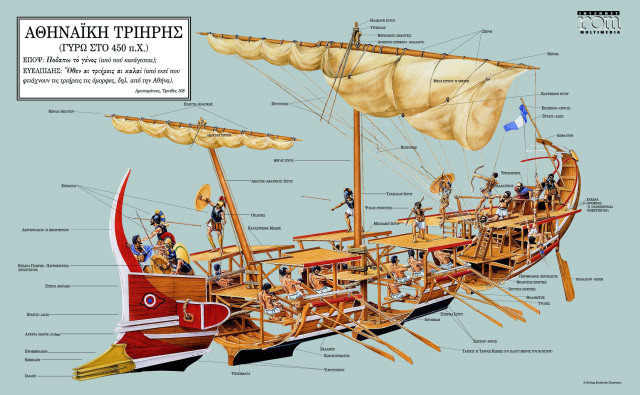
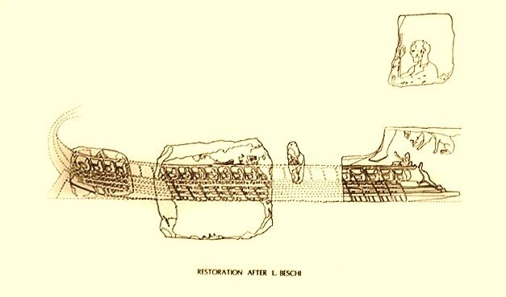

 |
| Афинская триера (Картинка кликабельна) |
Рассмотрели мы в прошлом рассказе расшифровку изображения на барельефе Ленормана. Верхний ярус гребцов – траниты – используют уключины, расположенные на платформе, выступающей наружу за плоскость борта – то, что в последующем развитии гребного корабля мы назовем постицей. В книге Дж. Моррисона и др. «Афинская трирема» выдвинуто предположение, что имя свое траниты получили от слова thranos , которое, наряду с распространенным значением «скамья» имеет значение «балка», особенно в архитектурных текстах, опорная балка для пола или крыши. Авторы считают, что в морских текстах это слово может обозначать балку, обрамляющую верхнюю палубу триеры, катастрому. Однако это толкование не является общепризнанным. Дж. Прайор, например, считает, что свое название траниты получили из-за маленьких банок thranoi, на которых сидели. Зигиты гребут через порты, расположенные непосредственно под постицей. Весла таламитов проходят через порты над нижним вельсом. (Вельсы на приведенном изображении афинской триеры окрашены в белый цвет). Ввиду того, что они расположены близко к поверхности воды, порты эти защищены от проникновения воды кожаными рукавами – askōma. На каждом борту триремы находятся по 27 гребцов в каждом из двух нижних ярусов и 31 гребец – на верхнем ярусе. Такова господствующая сейчас модель. Она иногда расходится с дошедшими до нас изображениями, но полностью соответствует сохранившимся в надписях реестрам. Таким образом, общее число гребцов на триере было 170 человек, а общая численность экипажа – 200 человек, что соответствует документальным данным.
Помимо Ленормановского барельефа было найдено еще несколько фрагментов, которые по составу мрамора, масштабу и стилю изображения (в частности, все фрагменты показывают правый борт триеры) относят к тому же памятнику. Вот как выглядит реконструкция триеры с расположенными на ней найденными фрагментами.

Итак мы выяснили расположение весел на античной триере. Остается добавить, что каждый гребец на этом корабле имел свое весло, свою кожаную подушку на банку и свою кожаную петлю для крепления весла к уключине. Фукидид в «Истории Пелопонесской войны» (II, 93.2) писал:
«Решено было, что каждый матрос возьмет с собою весло, подушку для скамейки и ремень и пешком дойдет от Коринфа до моря, обращенного к Афинам, что, прибыв быстро в Мегары, они выведут в море из нисейской верфи сорок своих кораблей, находившихся там, и немедленно отплывут к Пирею.»
И еще о веслах античных кораблей. Нельзя не упомянуть о самом большом весле для гребного корабля, когда-либо созданном человеком. Для этого обратимся к древнегреческому историку египетского происхождения Афинею (Атенею) из Навкратиса (мы уже писали о нем ранее). В своем обширном труде „Дипнософист“ Афиней приводит отрывки из сочинения историка Калликсена об Александрии, которые относятся к постройке сверхкорабля для царя Птолемея IV Филопатора (220-204 гг.). Мы не будем вдаваться в подробности конструкции этого монстра (желающие могут прочитать его описание здесь). Обратим внимание только на весла транитов: их длина составляла 38 локтей, т.е. почти 19 м, если считать локоть равным 0,49 м. Прикинем для себя длину этого весла. Если длина стандартного телеграфного столба равна 9 м, то весло – это два состыкованных вместе столба. Чтобы управляться с такими веслами в их вальковую часть заливали свинец для обеспечения равновесия их внутренних и наружных частей.
Но это крайний случай. Мы же говорим о стандартных кораблях той эпохи. И о некоторых характеристиках их весел мы поговорим в другой раз.